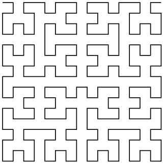

The TikZ and PGF Packages
Manual for version 3.1.10
Libraries
57 Lindenmayer System Drawing Library¶
57.1 Overview¶
Lindenmayer systems (also commonly known as “L-systems”), were originally developed by Aristid Lindenmayer as a theory of algae growth patterns and then subsequently used to model branching patterns in plants and produce fractal patterns. Typically, an L-system consists of a set of symbols, each of which is associated with some graphical action (such as “turn left” or “move forward”) and a set of rules (“production” or “rewrite” rules). Given a string of symbols, the rewrite rules are applied several times and when the resulting string is processed the action associated with each symbol is executed.
In pgf, L-systems can be used to create simple 2-dimensional fractal patterns…
\usetikzlibrary {lindenmayersystems}
\begin{tikzpicture}
\pgfdeclarelindenmayersystem{Koch
curve}{
\rule{F
->
F-F++F-F}
}
\shadedraw [top color=white, bottom color=blue!50, draw=blue!50!black]
[l-system={Koch
curve, step=2pt, angle=60, axiom=F++F++F, order=3}]
lindenmayer
system
--
cycle;
\end{tikzpicture}
…and “plant like” patterns…
\usetikzlibrary {lindenmayersystems}
\begin{tikzpicture}
\draw [green!50!black, rotate=90]
[l-system={rule set={F
-> FF-[-F+F]+[+F-F]}, axiom=F, order=4, step=2pt,
randomize
step
percent=25, angle=30, randomize
angle
percent=5}]
lindenmayer
system;
\end{tikzpicture}
…but it is important to bear in mind that even moderately complex L-systems can exceed the available memory of TeX, and can be very slow. If possible, you are advised to increase the main memory and save stack to their maximum possible values for your particular TeX distribution. However, even by doing this you may find you still run out of memory quite quickly.
For an excellent introduction to L-systems (containing some “really cool” pictures – many of which are sadly not possible in pgf) see The Algorithmic Beauty of Plants by Przemyslaw Prusinkiewicz and Aristid Lindenmayer (which is freely available via the internet).
-
TikZ Library lindenmayersystems ¶
\usepgflibrary{lindenmayersystems} %
LaTeX
and plain
TeX
and pure pgf
\usepgflibrary[lindenmayersystems] % ConTeXt and pure pgf
\usetikzlibrary{lindenmayersystems} %
LaTeX
and plain
TeX
when using TikZ
\usetikzlibrary[lindenmayersystems] % ConTeXt when using TikZ
This pgf-library provides basic
commands for defining and using simple L-systems. The
TikZ-library provides,
furthermore, a front end for using L-systems in
TikZ.
57.1.1 Declaring L-systems¶
Before an L-system can be used, it must be declared using the following command:
-
\pgfdeclarelindenmayersystem{⟨name⟩}{⟨specification⟩} ¶
-
\symbol{⟨name⟩}{⟨code⟩} ¶
-
• F move forward a certain distance, drawing a line. Uses \pgflsystemdrawforward.
-
• f move forward a certain distance, without drawing a line. Uses \pgflsystemmoveforward.
-
• + turn left by some angle. Uses \pgflsystemturnleft.
-
• - turn right by some angle. Uses \pgflsystemturnright.
-
• [ save the current state (i.e., the position and direction). Uses \pgflsystemsavestate.
-
• ] restore the last saved state. Uses \pgflsystemrestorestate.
-
/pgf/lindenmayer system/step=⟨length⟩ (no default, initially 5pt) ¶
-
/pgf/lindenmayer system/randomize step percent=⟨percentage⟩ (no default, initially 0) ¶
-
/pgf/lindenmayer system/left angle=⟨angle⟩ (no default, initially 90) ¶
-
/pgf/lindenmayer system/right angle=⟨angle⟩ (no default, initially 90) ¶
-
/pgf/lindenmayer system/randomize angle percent=⟨percentage⟩ (no default, initially 0) ¶
-
\pgflsystemcurrentstep ¶
-
\pgflsystemcurrentleftangle ¶
-
\pgflsystemcurrentrightangle ¶
-
\pgflsystemrandomizestep ¶
-
\pgflsystemrandomizeleftangle ¶
-
\pgflsystemrandomizerightangle ¶
-
\pgflsystemdrawforward ¶
-
\pgflsystemmoveforward ¶
-
\pgflsystemturnleft ¶
-
\pgflsystemturnright ¶
-
\pgflsystemsavestate ¶
-
\pgflsystemrestorestate ¶
-
\rule{⟨head⟩->⟨body⟩} ¶
This command declares a Lindenmayer system called ⟨name⟩. The ⟨specification⟩ argument contains a description of the L-system’s symbols and rules. Two commands \symbol and \rule are only defined when the ⟨specification⟩ argument is executed.
This defines a symbol called ⟨name⟩ for a specific L-system, and associates it with ⟨code⟩.
A symbol should consist of a single alpha-numeric character (i.e., A-Z, a-z or 0-9). The symbols F, f, +, -, [ and ] are available by default so do not need to be defined for each L-system. However, if you are feeling adventurous, they can be redefined for specific L-systems if required. The L-system treats the default symbols as follows (the commands they execute are described below):
The symbols [ and ] act like a stack: [ pushes the state of the L-system on to the stack, and ] pops a state off the stack.
When ⟨code⟩ is executed, the transformation matrix is set up so that the origin is at the current position and the positive x-axis “points forward”, so \pgfpathlineto{\pgfpoint{1cm}{0cm}} draws a line 1cm forward.
The following keys can alter the production of an L-system. However, they do not store values in themselves.
How far the L-system moves forward if required. This key sets the TeX dimension \pgflsystemstep.
If the step is to be randomized, this key specifies by how much. The value is stored in the TeX macro \pgflsystemrandomizesteppercent.
This key sets the angle through which the L-system turns when it turns left. The value is stored in the TeX macro \pgflsystemrleftangle.
This key sets the angle through which the L-system turns when it turns right. The value is stored in the TeX macro \pgflsystemrrightangle.
If the angles are to be randomized, this key specifies by how much. The value is stored in the TeX macro \pgflsystemrandomizeanglepercent.
For speed and convenience, when the code for a symbol is executed, the following commands are available.
The current “step” of the L-system (i.e., how far the system will move forward if required). This is initially set to the value in the TeX-dimensions \pgflsystemstep, but the actual value may be changed if \pgflsystemrandomizestep is used (see below).
The angle the L-system will turn when it turns left. The value stored in this macro may be changed if \pgflsystemrandomizeleftangle is used.
The angle the L-system will turn when it turns right. The value stored in this macro may be changed if \pgflsystemrandomizerightangle is used.
The following commands may be useful if you wish to define your own symbols.
Randomizes the value in \pgflsystemcurrentstep according to the current value of the key randomize step percent.
Randomizes the value in \pgflsystemcurrentleftangle according to the value of the randomize angle percent key.
Randomizes the value in \pgflsystemcurrentrightangle according to the value of the randomize angle key.
Move forward in the current direction, by \pgflsystemcurrentstep, drawing a line in the process. This macro calls \pgflsystemrandomizestep. Internally, pgf simply shifts the transformation matrix in the positive direction of the current (transformed) x-axis by \pgflsystemstep and then executes a line-to to the (newly transformed) origin.
Move forward in the current direction, by \pgflsystemcurrentstep, without drawing a line. This macro calls \pgflsystemrandomizestep. pgf executes a transformation as above, but executes a move-to to the (newly transformed) origin.
Turn left by \pgflsystemcurrentleftangle. Internally, pgf simply rotates the transformation matrix. This macro calls \pgflsystemrandomizeleftangle.
Turn right by \pgflsystemcurrentrightangle. Internally, pgf simply rotates the transformation matrix. This macro calls \pgflsystemrandomizerightangle.
Save the current position and orientation. Internally, pgf simply starts a new TeX-group.
Restore the last saved position and orientation. Internally, pgf closes a TeX-group, restoring the transformation matrix of the outer scope, and a move-to command is executed to the (transformed) origin.
Declare a rule. ⟨head⟩ should consist of a single symbol, which need not have been declared using \symbol or exist as a default symbol (in fact, the more interesting L-systems depend on using symbols with no corresponding code, to control the “growth” of the system). ⟨body⟩ consists of a string of symbols, which again need not necessarily have any code associated with them.
As an example, the following shows an L-system that uses some of these commands. This example illustrates the point that some symbols, in this case A and B, do not have to have code associated with them. They simply control the growth of the system.

\usetikzlibrary {lindenmayersystems}
\pgfdeclarelindenmayersystem{Hilbert
curve}{
\symbol{X}{\pgflsystemdrawforward}
\symbol{+}{\pgflsystemturnright} % Explicitly define + and - symbols.
\symbol{-}{\pgflsystemturnleft}
\rule{A
->
+BX-AXA-XB+}
\rule{B
->
-AX+BXB+XA-}
}
\tikz\draw[lindenmayer system={Hilbert
curve, axiom=A, order=4, angle=90}]
lindenmayer
system;
57.2 Using Lindenmayer Systems¶
57.2.1 Using L-Systems in PGF¶
The following command is used to run an L-system in pgf:
-
\pgflindenmayersystem{⟨name⟩}{⟨axiom⟩}{⟨order⟩} ¶
Runs the L-system called ⟨name⟩ using the input string ⟨axiom⟩ for ⟨order⟩ iterations. In general, prior to calling this command, the transformation matrix should be set appropriately for shifting and rotating, and a move-to to the (transformed) origin should be executed. This origin will be where the L-system starts. In addition, the relevant keys should be set appropriately.
\usetikzlibrary {lindenmayersystems}
\begin{tikzpicture}
\draw [help lines] grid
(3,2);
\pgfset{lindenmayer
system/.cd, angle=60, step=2pt}
\foreach \x/\y in
{0cm/1cm, 1.5cm/1.5cm, 2.5cm/0.5cm, 1cm/0cm}{
\pgftransformshift{\pgfqpoint{\x}{\y}}
\pgfpathmoveto{\pgfpointorigin}
\pgflindenmayersystem{Koch
curve}{F++F++F}{2}
\pgfusepath{stroke}
}
\end{tikzpicture}
Note that it is perfectly feasible for an L-system to define special symbols which perform the move-to and use-path operations.
57.2.2 Using L-Systems in TikZ¶
In TikZ, an L-system is created using a path operation. However, TikZ is more flexible regarding the positioning of the L-system and also provides keys to create L-systems “on-line”.
-
\path … lindenmayer system [⟨keys⟩] …; ¶
This will run an L-system according to the parameters specified in ⟨keys⟩ (which can also contain normal keys such as draw or thin). The syntax is flexible regarding the L-system parameters and the following all do the same thing:
\draw lindenmayer
system
[lindenmayer system={Hilbert curve, axiom=4, order=3}];
\draw [lindenmayer system={Hilbert curve, axiom=4, order=3}] lindenmayer
system;
\tikzset{lindenmayer system={Hilbert curve, axiom=4, order=3}}
\draw lindenmayer
system;
-
\path … l-system [⟨keys⟩] …; ¶
A more compact version of the lindenmayer system path command.
This library adds some additional keys for specifying L-systems. These keys only work in TikZ and all have the same path, namely, /pgf/lindenmayer system, but the following keys are provided for convenience, so that you do not have to keep repeating this path:
-
/pgf/lindenmayer system={⟨keys⟩}(style, no default) ¶
-
alias /tikz/lindenmayer system
This key changes the key path to /pgf/lindenmayer systems and executes ⟨keys⟩.
-
/pgf/l-system={⟨keys⟩}(style, no default) ¶
-
alias /tikz/l-system
-
/pgf/lindenmayer system/name={⟨name⟩}(no default) ¶
Sets the name for the L-system.
-
/pgf/lindenmayer system/axiom={⟨string⟩}(no default) ¶
Sets the axiom (or input string) for the L-system.
-
/pgf/lindenmayer system/order={⟨integer⟩}(no default) ¶
Sets the number of iterations the L-system will perform.
-
/pgf/lindenmayer system/rule set={⟨list⟩}(no default) ¶
This key allows an (anonymous) L-system to be declared “on-line”. There is, however, a restriction that only the default symbols can be used for drawing (empty symbols can still be used to control the growth of the system). The rules in ⟨list⟩ should be separated by commas.
-
/pgf/lindenmayer system/anchor=⟨anchor⟩(no default) ¶
Be default, when this key is not used, the L-system will start from the last specified coordinate. By using this key, the L-system will be placed inside a special (rectangle) node which can be positioned using ⟨anchor⟩.
\usetikzlibrary {lindenmayersystems}
\begin{tikzpicture}[l-system={step=1.75pt, order=5, angle=60}]
\pgfdeclarelindenmayersystem{Sierpinski
triangle}{
\symbol{X}{\pgflsystemdrawforward}
\symbol{Y}{\pgflsystemdrawforward}
\rule{X
->
Y-X-Y}
\rule{Y
->
X+Y+X}
}
\draw [help lines] grid
(3,2);
\draw [red] (0,0) l-system
[l-system={Sierpinski
triangle, axiom=+++X, anchor=south west}];
\draw [blue] (3,2) l-system
[l-system={Sierpinski triangle, axiom=X, anchor=north
east}];
\end{tikzpicture}